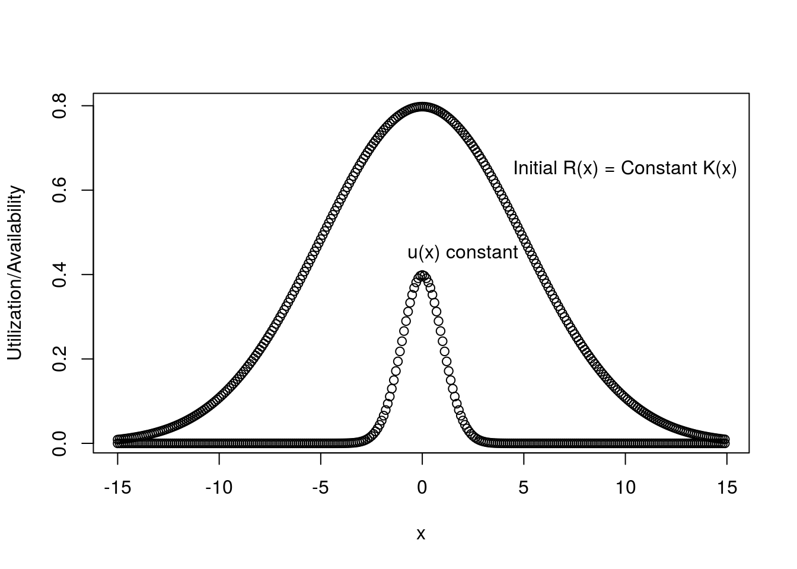
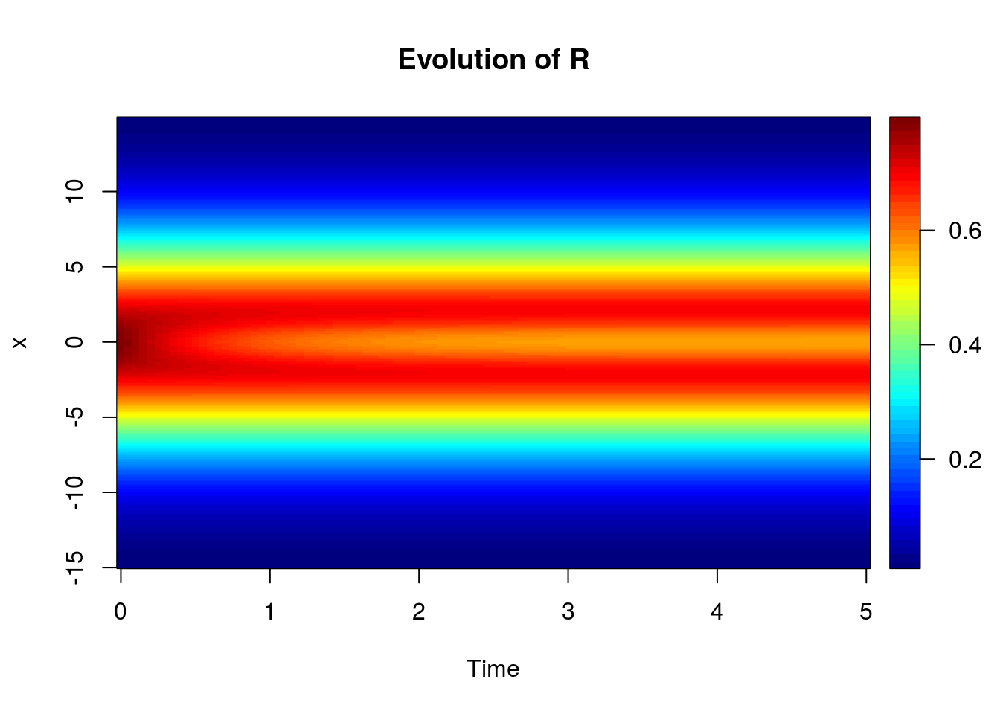

The resource availability curve \(R(x)\geq0\) is the amount of resources available of type \(x\).
The resource utilization curve \(u(x)\geq0\) is the “strategy” used by individuals (or species) to procure resources. We require \(\int udx=1\) so that this defines a probability density of resource use.
Fitness can be measured by \(\int R(x)u(x)dx\). Note that this is an inner-product if \(R(x)\) and \(u(x)\) belong to some inner-product-space (such as \(L^2({\mathbb{R}})\)). This fact helps develop some intuition about the biology. For instance, in the case where there are just a finite number \(n\) of resources then both \(R\) and \(u\) are elements of \({\mathbb{R}}^n\). If \(R\) and \(u\) are “orthogonal” we easily see that the type of resources available do not co-occur with the type of resources preferred. Hence, fitness is zero in this situation, just as predicted by the inner-product. If we try to push the math too far here then one snag we’ll run into is that both \(R(x)\) and \(u(x)\) are non-negative for all \(x\) and so the set of all such curves would be a subset of \(L^2({\mathbb{R}})\) and not a subspace.
The amount of competition between individuals (or species) with utilization curves \(u_1\) and \(u_2\) is referred to as “nich overlap” and is classically computed as \(\int u_1(x)u_2(x)dx\).
Assume:
A population of individuals with phenotypes \(z\in{\mathbb{R}}\) distributed normally with mean \(\bar z\) and variance \(\sigma^2\).
Each individual has a Gaussian resource curve centered on its phenotype with constant “variance” \(\eta^2\):
\[u(x,z)=\frac{1}{\sqrt{2\pi\eta^2}}\exp{\left( -\frac{(z-x)^2}{2\eta^2} \right)}\]
We can start by assuming a static resource availability curve that is also Gaussian:
\[R(x)=\frac{1}{\sqrt{2\pi\omega^2}}\exp{\left( -\frac{(\theta-x)^2}{2\omega^2} \right)}\]
Then fitness is calculated as:
\[W(z)=\int R(x)u(x,z)dx=\frac{1}{\sqrt{2\pi(\omega^2+\eta^2)}}\exp{\left( -\frac{(\theta-z)^2}{2(\omega^2+\eta^2)} \right)}\]
And mean fitness:
\[\overline{W}=\frac{1}{\sqrt{2\pi(\omega^2+\eta^2+\sigma^2)}}\exp{\left( -\frac{(\theta-\bar z)^2}{2(\omega^2+\eta^2+\sigma^2)} \right)}\] The breeder’s equation returns:
\[\frac{d\bar z}{dt}=G\frac{\partial\ln\overline{W}}{\partial\bar z}=G\frac{\theta-\bar z}{\omega^2+\eta^2+\sigma^2}\]
Hence, the population mean phenotype will converge on \(\theta\). However, this is not realistic since as resources are consumed \(R(x)\) will fluctuate in abundace. Too keep the resources from disappating completely we can assume some restoration force. I’ll assume that in the absence of consumption, \(R(x)\) will recover to some function \(K(x)\geq0\) at rate \(\lambda\). Then if there are \(N\) individuals with phenotypes \(z_1,z_2,\dots,z_N\) it seems reasonable to write
\[\frac{\partial R(x)}{\partial t}=\lambda(K(x)-R(x))-R(x)\sum_{i=1}^Nu(x,z_i).\]
Since the phenotypes \(z_1,\dots,z_N\) are random the \(u(x,z_i)\) are random as well. I’ll stick to the mean dynamics which are
\[\frac{\partial R(x)}{\partial t}=\lambda(K(x)-R(x))-R(x)N\bar{u} (x)\]
where \(\bar u(x)\) can be written as
\[\bar u(x)=\frac{1}{\sqrt{\eta^2+\sigma^2}}\exp{\left( -\frac{(x-\bar z)^2}{2(\eta^2+\sigma^2)} \right)}\]
so long as the \(z_i\) are normally distributed and this where the technical difficulties begin. We required \(R\) to be Gaussian to calculate the mean fitness, which in turn needs to be Gaussian in order to calculate the change in mean phenotype. However, at equilibrium
\[R^*=\frac{\lambda K}{\lambda+N\bar u}.\]
My idea was to use a Gaussian \(K\) and hope the details somehow fell into place. But we can see from the equilirbium expression that this is not the case. A numerical illustration helps to confirm the issue. To focus on what happens to \(R\) I’ll hold \(\bar u(x)\) fixed and set \(K(x)\) to a Gaussian.


If I leave the world of Gaussians behind then I’ll be left to deal with functions that I can’t write down. Is there a way to handle with such a situation? Can I still somehow describe what will happen? One idea I had is to consider the expected niche overlap for independently drawn phenotypes:
\[{\mathbb{E}}{\left( \int u(x,z_i)u(x,z_j)dx \right)}\overset{\text{Tonelli's, right?}}{=}\int{\mathbb{E}}(u)^2dx\equiv\int\bar u(x)^2dx\]
This would give us a sense of how many species can be packed into an environment. However, the problem I’m running into here is just one manifestation of the same issue I keep running into again and again in evolutionary theory. Analytical results seem to only be possible if we force the phenotypic distribution to be normal, but most of the situations I’m interested in perturb the phenotypic distribution from normality. I can write down a differential equation for the change in phenotypic distribution given any fitness function. I’ve done so here. This lets me find solutions with numerical methods as done here. But the goal is to obtain some analytical results that I can use to draw general conclusions about the nature of these evolving systems. Currently this goal seems hopeless. But because I’m still just a grasshopper in the world of differential and partial differential equations I feel like there may be some hope that there exists techniques to obtain the results I’m after but I’m just not aware of them.